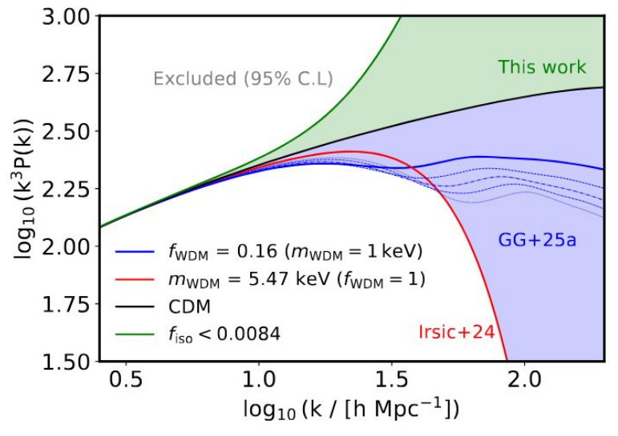
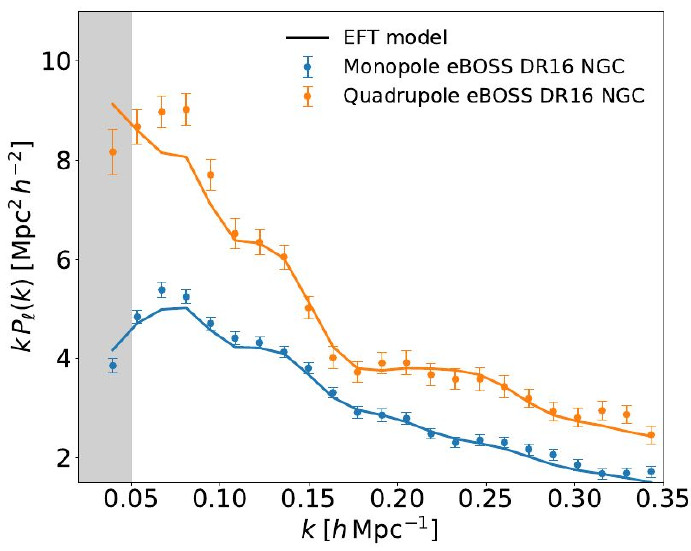
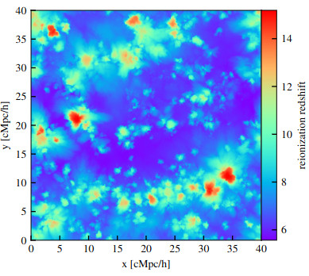
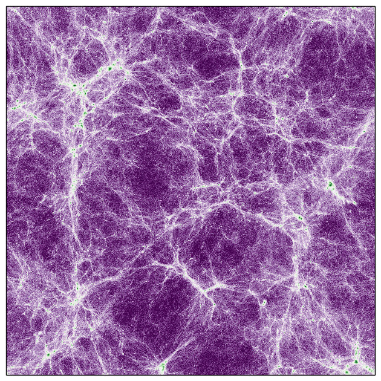

My work utilizes the Lyman-α forest as an astrophysical and cosmological laboratory to explore the fundamental laws of physics and the history of our Universe.

Probing the nature of Dark Matter (WDM, FDM, Axions) and the signatures of Primordial Magnetic Fields.

Precision cosmology from BAO to the 3D flux power spectrum, and the road to Euclid and WST.

Reionization, thermal history, and the pressure smoothing scale. High-z data with EQUALS and GHOSTLY.

High-resolution hydrodynamical simulations: The Sherwood-Relics, CAMELS, FABLE, and xFABLE suites.